This tutorial will take you through setting up a Visual Studio 2017 project and creating an application that will be able to list connected devices.
Setting up a project to use CANlib
In this section we will enable the usage of Kvaser CANlib in Visual Studio 2017 when creating a C# project which can be used to build both WIN32 and WIN64 applications. We will also handle the platform settings: x86 and x64.
First we must have the "Kvaser Drivers for Windows" and "Kvaser CANlib SDK" installed, see Installing on Windows for details on how to download and install these.
Now we are ready to start Visual Studio 2017 (C#) and create our project (I am using "Microsoft Visual Studio Community 2017").
Creating an empty project
After starting Visual Studio 2017 (C#), we create a new project by selecting "File–>New->Project...". Choose to create a "Console App, Visual C#", name it "CanlibTutorial" (the Solution will now also be named "CanlibTutorial"), and press "OK".
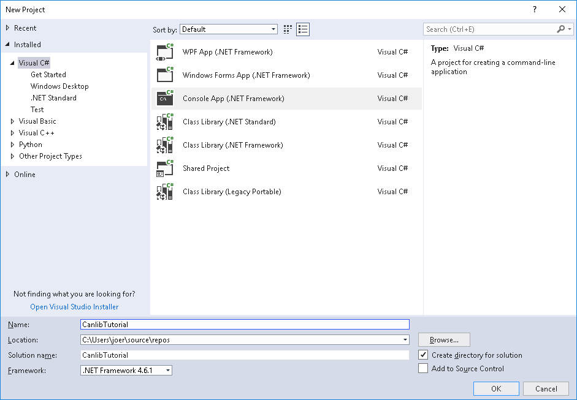
Creating the CanlibTutorial project
You will now be given an empty main function that does nothing.
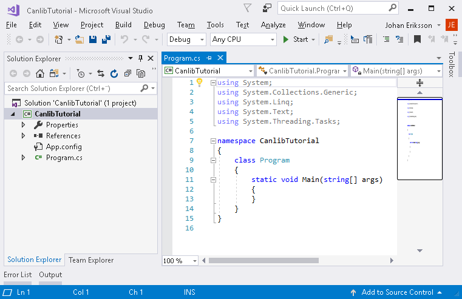
The CanlibTutorial project
Adding CANlib
Now we need to add CANlib to the project.
Open the reference manager (Project -> Add Reference) and press browse to locate and add the 32 bit or 64 bit library to the reference manager using one of the paths below.
- Note
- CANLib is by default installed to C:\Program Files (x86)\Kvaser
- Using 32 bit
Add path to LIB(x86) (..\Kvaser\Canlib\dotnet\win32\netstandard2.0\Kvaser.CanLib.dll)
- Using 64 bit
Add path to LIB(x64) (..\Kvaser\Canlib\dotnet\x64\netstandard2.0\Kvaser.CanLib.dll)
- Note
- This applies to all libraries in the canlibSDK (CAN bus API (CANlib), LIN bus API (LINlib), Database API (kvaDbLib), Memorator API (kvmlib), Memorator XML API (kvaMemoLibXML), Converter API (kvlclib), Remote Device API (kvrlib)). Make sure not to mix 64 bit and 32 bit versions of the canlibSDK libraries.
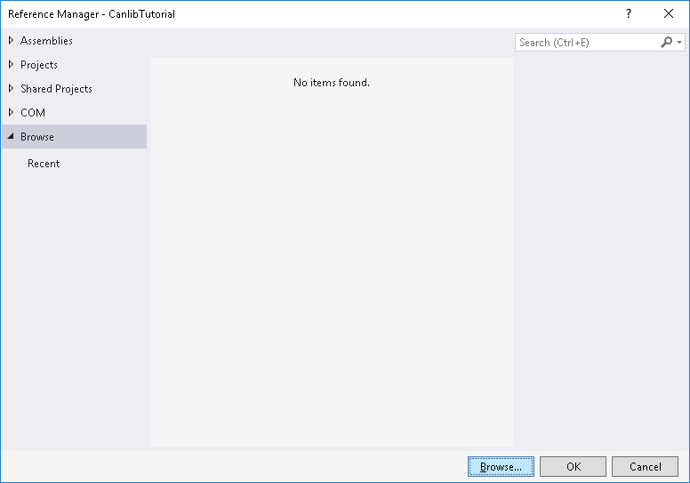
Press "Browse" to locate and add references
After adding the reference to the reference manager, select the checkbox for the library you want to add to your project and press "OK".
- Note
- Only one of the Kvaser.CanLib files can be added to a project at a time, if you wish to switch the current Kvaser.CanLib file you first need to delete it from the project and then add the replacement.
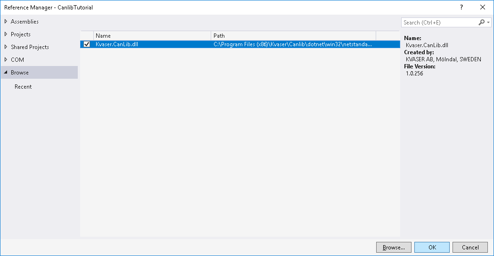
The Reference manager after adding the library file
Kvaser.CanLib should now be under References in the project.
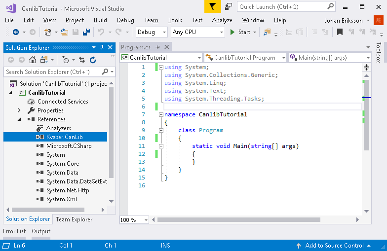
Kvaser.CanLib has successfully been added to the project
Adding the code
The last step is to add using Kvaser.CanLib; to Program.cs. We do this as well as enter some more code...
using System;
using System.Collections.Generic;
using System.Linq;
using System.Text;
using System.Threading.Tasks;
using Kvaser.CanLib;
namespace CanlibTutorial
{
class Program
{
static public bool CheckForError(string cmd, Canlib.canStatus stat)
{
if (stat != Canlib.canStatus.canOK)
{
Canlib.canGetErrorText(stat, out string buf);
Console.WriteLine("[{0}] {1}: failed, stat={2}", cmd, buf, (int)stat);
return true;
}
return false;
}
static public void ListChannels()
{
Canlib.canStatus stat;
stat = Canlib.canGetNumberOfChannels(out int number_of_channels);
if (CheckForError("canGetNumberOfChannels", stat))
return;
Console.WriteLine("Found {0} channels", number_of_channels);
for (int i = 0; i < number_of_channels; i++)
{
stat = Canlib.canGetChannelData(i, Canlib.canCHANNELDATA_DEVDESCR_ASCII, out object device_name);
if (CheckForError("canGetChannelData", stat))
return;
stat = Canlib.canGetChannelData(i, Canlib.canCHANNELDATA_CHAN_NO_ON_CARD, out object device_channel);
if (CheckForError("canGetChannelData", stat))
return;
Console.WriteLine("Found channel: {0} {1} {2}", i, device_name, ((UInt32)device_channel + 1));
}
}
static void Main(string[] args)
{
Canlib.canInitializeLibrary();
ListChannels();
Console.ReadKey(true);
}
}
}
After adding the code to the project we should now be ready to compile and run, we can do this pressing the green start icon.
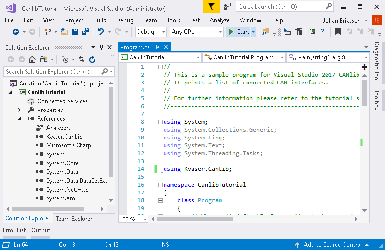
Compile and run the program by pressing the green start icon
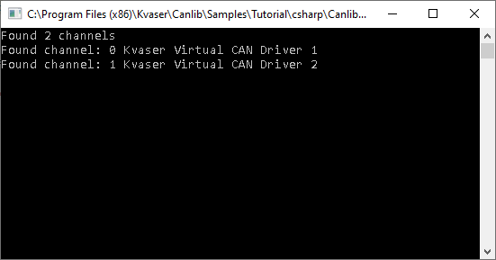
The output from the program should look something like this
Setting up 64 bit compiling
Open the Configuration Manager by selecting it in the dropdown menu.
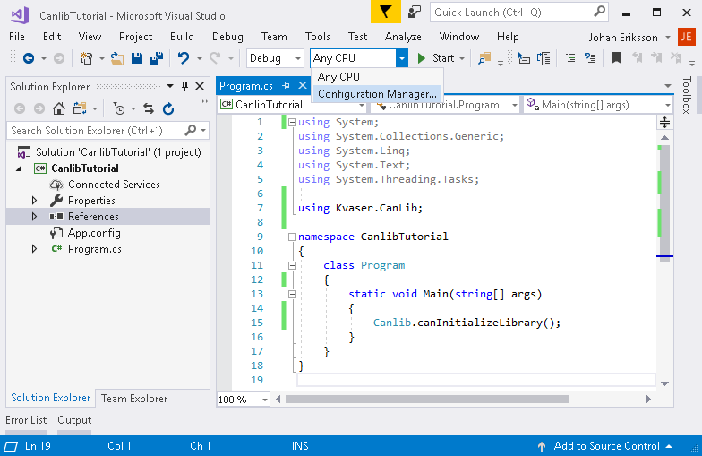
Open the Configuration Manager
Create a new solution platform by selecting <New...> in the dropdown menu of "Active solution platform".
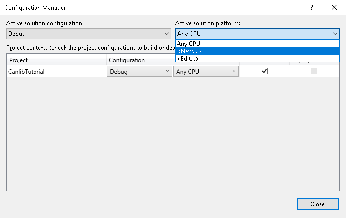
Creating a new solution platform
Select the x64 option in the dropdown menu and check the checkbox for "Create new project platform".
Now select the x64 option in the "Active solution platform" dropdown menu and then the x64 in the "Platform" menu.
- Note
- The "Active solution platform" is the selection for what you want to compile it for and the Project "platform" is the selection for what you want to compile the project for whith the currently selected Solution platform.
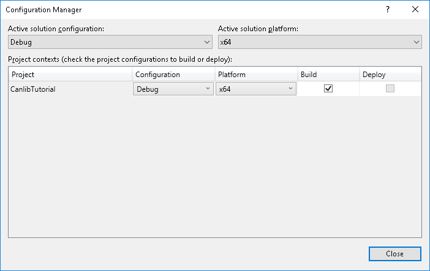
Making sure the x64 platform have been properly added
Select x64 in the dropdown menu and then press start to compile and run.
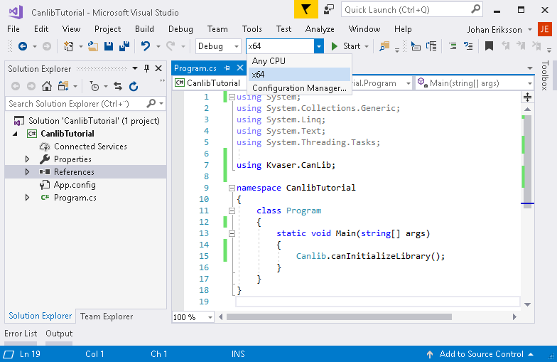
Select the x64 option in the dropdown menu